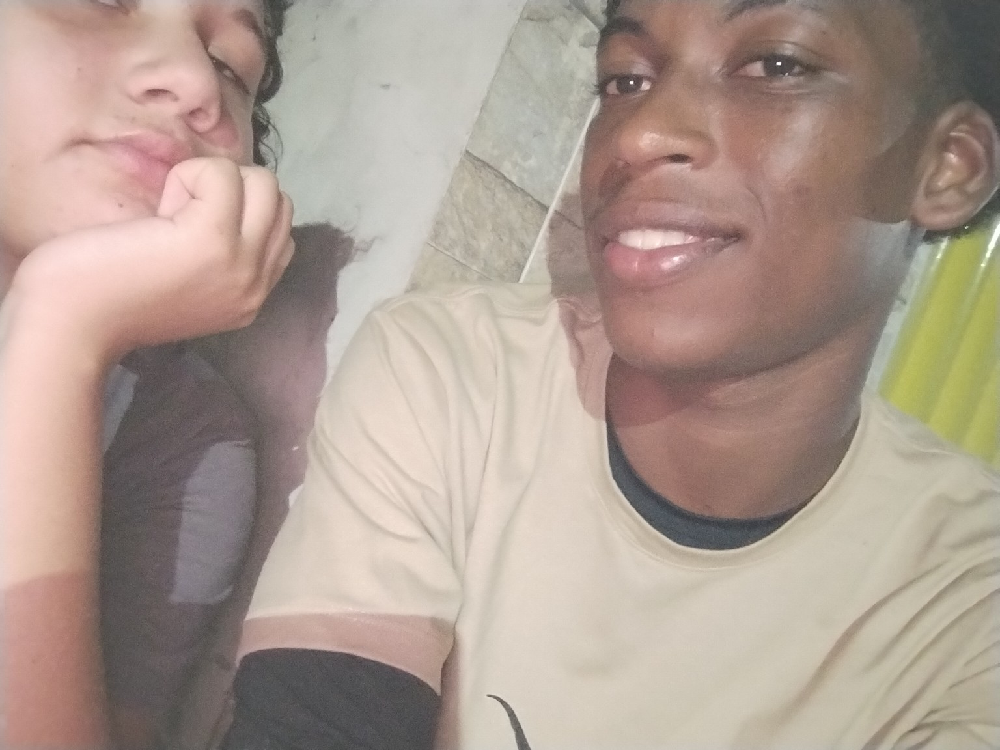
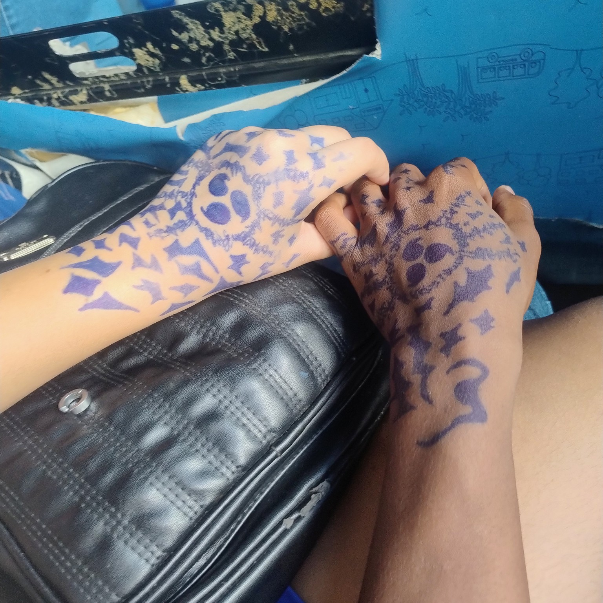
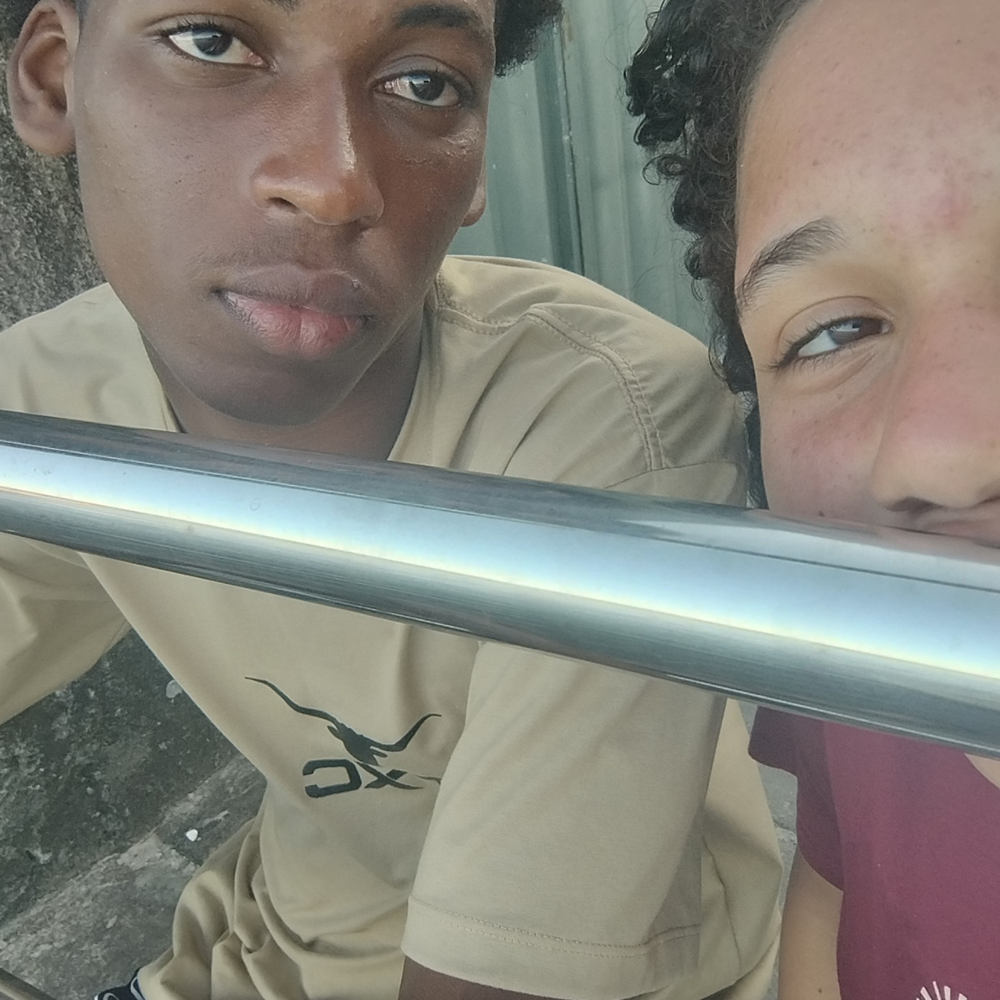
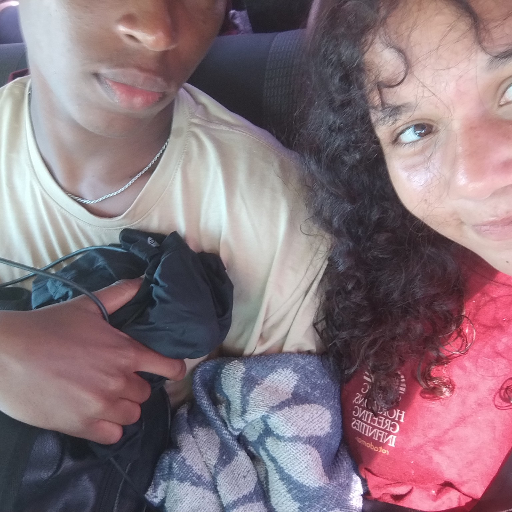
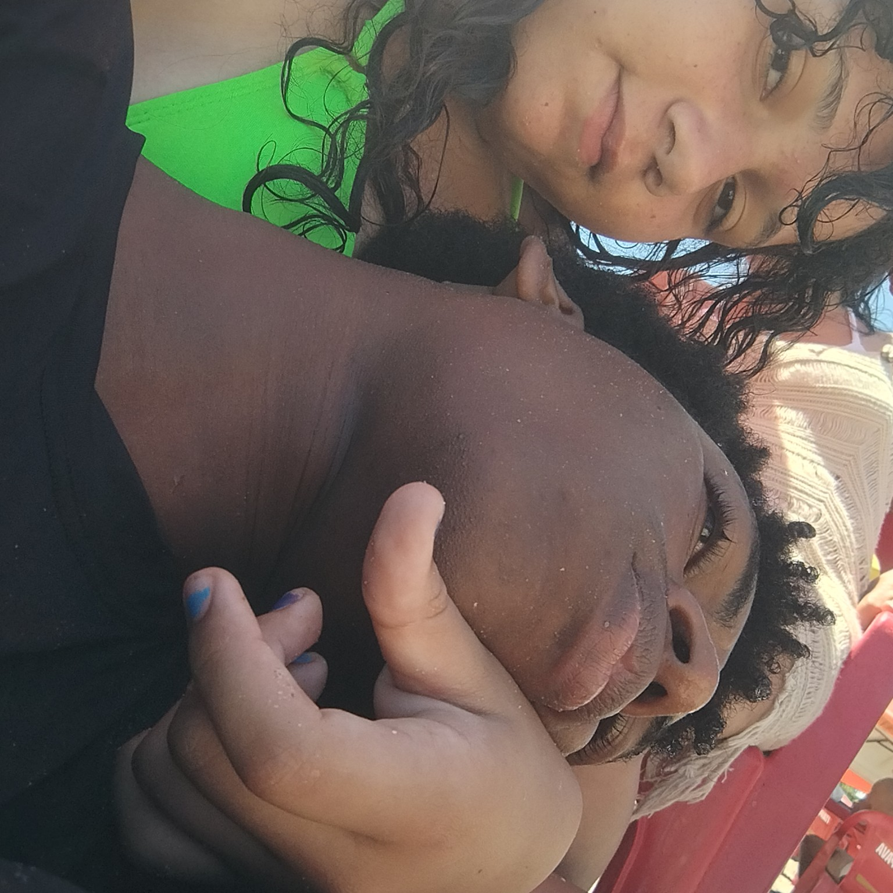
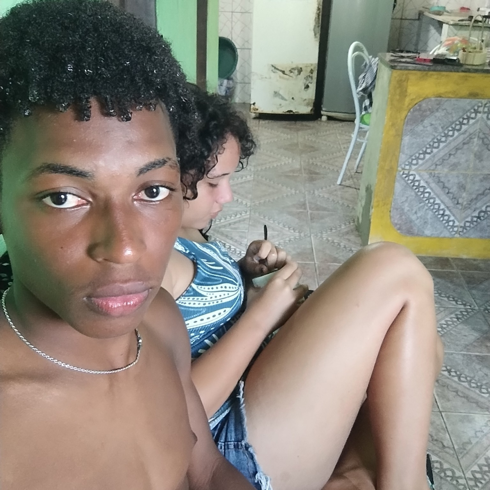
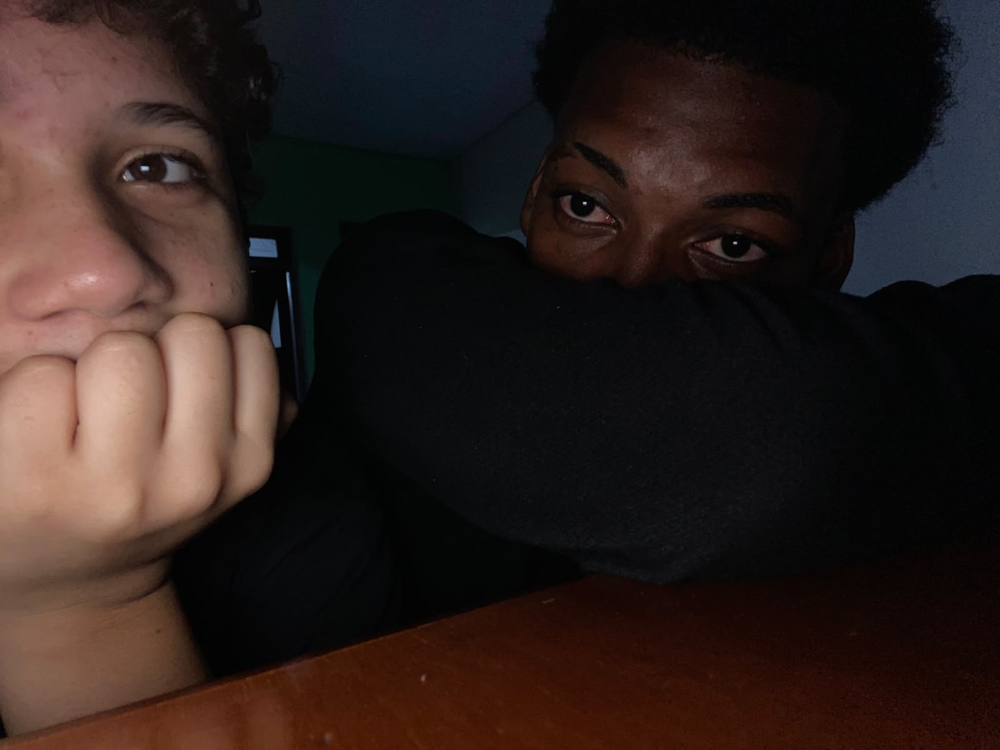
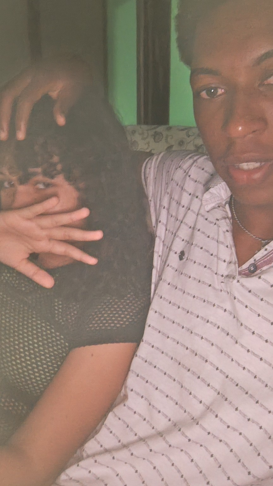
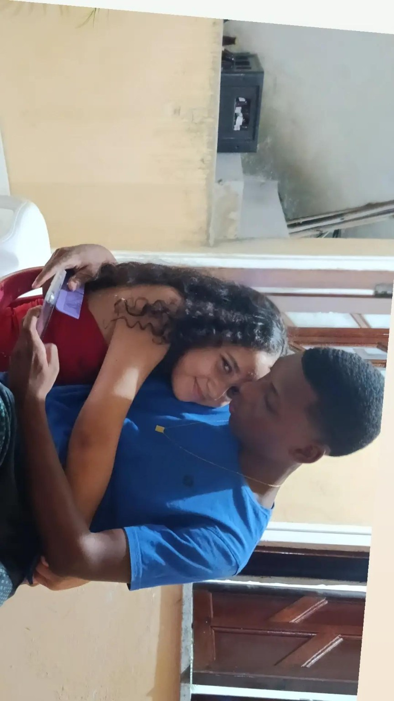
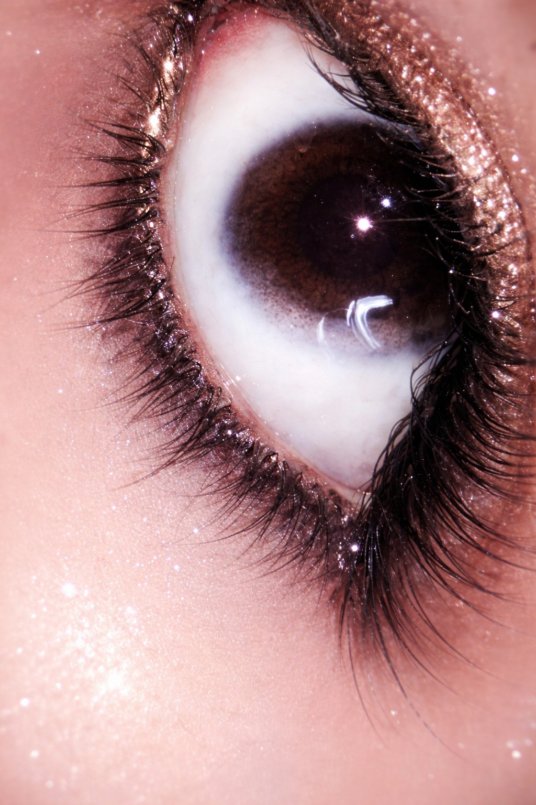

para a minha pessoa favorita
365 dias.
Uma vida de
memórias.
12 meses, 52 semanas, 8.760 horas…
e ainda parece pouco tempo com você.

// tempo compartilhado
Os números contam o tempo. Você dá sentido a ele.
Meu amor,
Se nosso amor fosse um código,
você seria minha parte favorita.
É estranho pensar que o tempo consegue transformar segundos em lembranças, momentos em saudades e duas pessoas em uma história tão importante. Hoje, quando olho para tudo o que vivemos, percebo que esses números são apenas uma pequena tentativa de medir algo que não cabe em nenhuma unidade de tempo.
Porque não foram apenas 365 dias. Foram 365 dias tendo você como parte da minha vida, construindo memórias, aprendendo a amar e descobrindo, pouco a pouco, o significado de compartilhar a vida com alguém.
nosso_amor = { "duracao": "1 ano", "memorias": "incontáveis", "status": "escrevendo nossa história" }
01. Aprender a deixar o orgulho para trás.
Uma das maiores renúncias que fizemos foi deixar o orgulho de lado. Amar não significa nunca errar, discutir ou magoar. Significa também ter coragem de reconhecer quando erramos e entender que pedir desculpas não diminui ninguém.
Nós aprendemos que uma briga não precisa virar ressentimento. Podemos conversar, admitir nossos erros e pedir desculpas um ao outro. Eu não quero vencer uma discussão e perder a paz entre nós. Quero que a gente vença as dificuldades sem precisar vencer um ao outro.
02. Quando amar significava sentir saudade.
Eu lembro de como foi difícil no começo, quando seus pais ainda não me conheciam e a gente não podia ficar junto como gostaria. Às vezes, tudo o que eu queria era estar perto de você, conversar, abraçar e aproveitar o tempo — mas nem sempre era possível.
Mesmo assim, eu te amava. Com o tempo, eles puderam me conhecer melhor e as coisas começaram a ficar mais leves. Ainda existem limitações, mas sou grato por essa mudança e por cada oportunidade de estar ao seu lado. Essa parte da nossa história me ensinou que algumas coisas precisam de paciência, confiança e tempo.
03. A ilha, os abraços e o nosso pequeno universo.
As nossas fotos, os dias na ilha, as mãos entrelaçadas e aqueles momentos em que ficamos tão grudados que parecia que queríamos entrar um na alma do outro. Às vezes, eu queria que o tempo tivesse uma função de pausa, só para ficar um pouquinho mais naqueles instantes em que estar com você era tudo o que eu precisava.
Algumas das minhas lembranças favoritas não dependem de grandes acontecimentos. Elas são especiais simplesmente porque você estava lá. Se cada lembrança fosse uma fotografia, eu precisaria de um álbum infinito.
Pequenos instantes,
um mundo inteiro.
Algumas lembranças não precisam de legenda. Mas todas merecem ser guardadas.









Toque em uma foto para vê-la maior.
A trilha sonora
do nosso primeiro ano.
Tem música que toca e a gente só ouve. E tem música que toca e faz a gente lembrar.
Os links abrem buscas no YouTube para você escolher a versão certa.
O primeiro ano foi escrito.
Os próximos capítulos esperam por nós.
Eu não sei exatamente como serão os próximos anos. Mas quero novas fotos, novos lugares, novos abraços e novas lembranças. Quero que a gente continue aprendendo, conversando, pedindo desculpas e escolhendo construir algo verdadeiro — com carinho, respeito e responsabilidade.
Se eu pudesse voltar ao começo, sabendo de tudo o que viveríamos, eu ainda gostaria de descobrir essa história ao seu lado.
// final_message.txt
1 ano · 12 meses · 365 dias
Você não é só parte
da minha história.
Você dá sentido a ela.
Feliz nosso primeiro aniversário, minha amada.
Obrigado por cada lembrança, cada abraço e cada reconciliação.
Eu te amo. ❤️
while (historia_continua) { cuidar_de_nos(); }